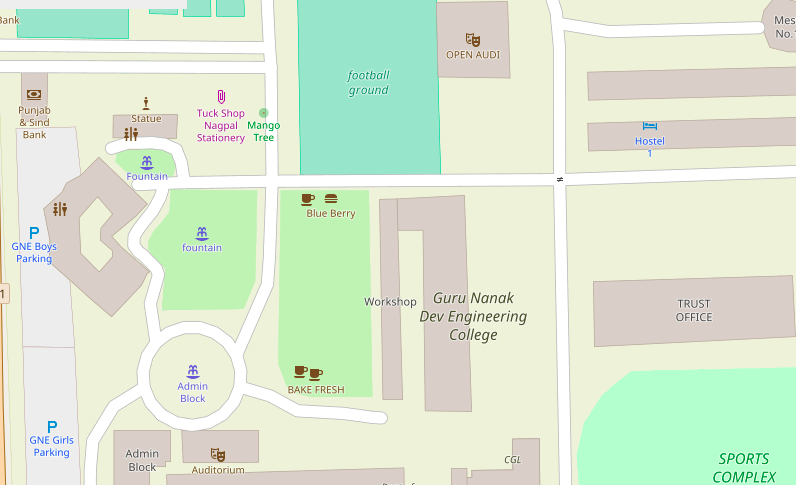
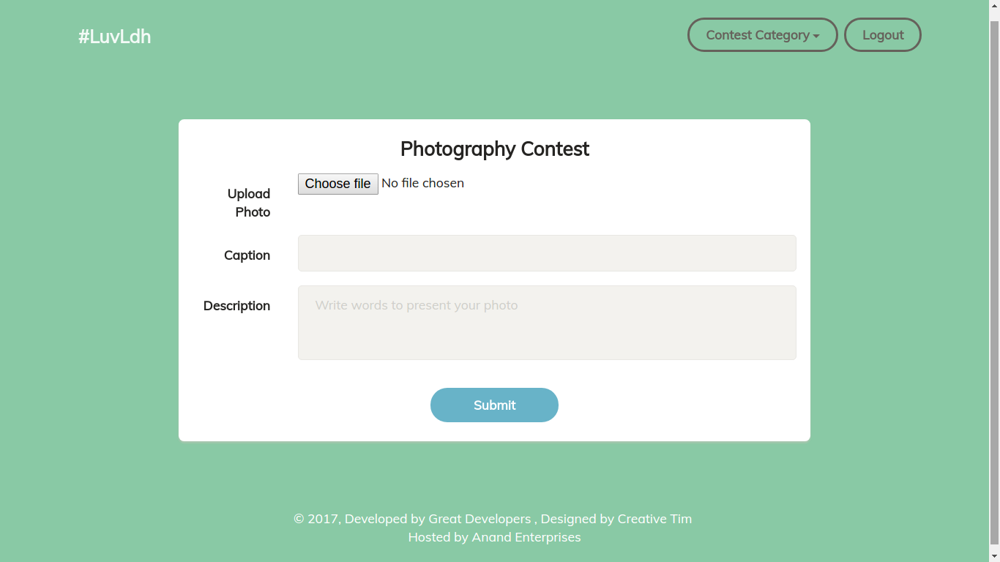
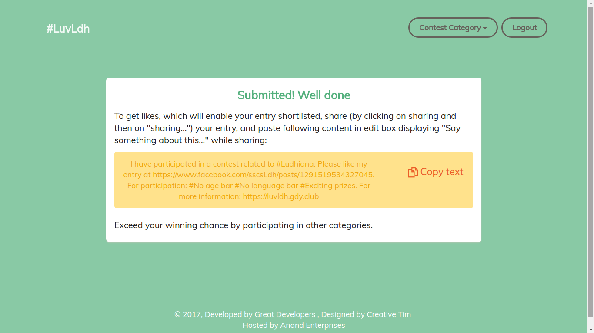
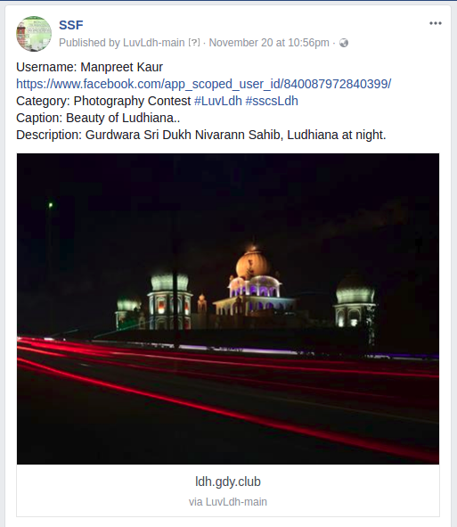

6-month Training
Amisha Budhiraja
University Roll No. 1410808
College Roll No. 145010
During my 6-month training, I worked on three main projects: Democratic Map: Customized for GNDEC, LuvLdh and Librehatti. Where Democratic Map being chosen by me as the main project.
Before starting, I want to acknowledge some people.
- Dr. H.S. Rai (Dean TCC and Head of Training)
- Mandeep Singh (Developer of Librehatti)
Democratic Maps: Customized for GNDEC
The Existing System
Multiple Organizations like Google Maps, Ordnance Survey provide maps but with the following limitations:
- The data is copyrighted and owned.
- The map can not be customized.
- They are costly.
- Offline inaccessible.
- Mass downloads sometimes impossible.
But we have a solution.
OpenStreetMap(OSM)
OpenStreetMap is an open-source, free web-based software, owned by you, the contributors. It completely overcome the limitations of the existing system.
Objective of the Project
The main objective of the project is create beautifully customized map for GNE freshers to locate the places like labs with Punjabi Language in a 3-D View. Moreover, to encourage the students to contribute to the open source projects.
OSM Components
- Postgresql
- Osm2pgsql
- Mod_tile
- Mapnik
- Openstreetmap-carto
Technologies Used:
- C++
- Cmake
- Shell scripting
- Carto Preprocessor
- JSON
- Git
- Doxygen
- LaTeX
- Hovercraft
Here, Is the live Demo.
Implementation
- Map of Ludhiana in Punjabi.
- Search OSM data by name and address.
- Popup Menus.
- Control Map with Arrow Keys.
- 3-D View of the map.
- GNE Tour.
- View Animations.
- OSM automatic tile server with shell script.
- International boundary of India with city and country name only.
- Admin levels with different colors with names displayed over each boundary area.
- Modified the icons of the nodes.
- Customized the land colour or background colour.
- Increased zoom levels to 28 for indoor mapping.
- Documentation using Doxygen.
With this, I end my first project.
- Clone from (https://github.com/amisha2016/pbOSM)
- Documentation (https://github.com/amisha2016/pbOSM/html/)
- Blogs (https://amisha2016.wordpress.com/)
Love Ludhiana WebApp
A web app developed for "Love Ludhiana" contest. As per the contest rules, user has to upload the content only through this app. This app acts as a channel to upload image or PDF to contest's Facebook page.
Technologies Used:
- Python Django Framework
- Facebook Graph API
- Cron Job
Website

After Facebook authentication
Form submitted
User post on Love Ludhiana
Facebook page
- Must participate and showcase your city.
- Source Code: https://github.com/amisha2016/LuvLdh-Webapp
This app will be released in next semester officially and might be even with web client also.
Librehatti- An E-commerce cum CRM Django App
Implementation
- Compatibility with latest Django and Python version .
- Added dispatch Register module.
- Added GST Module.
- Added functionality to make it configurable software like for hospitals, jewellery shop etc.
The main benefit of this Project
- Unlike other CA softwares for example Busy, SAP don't provide an individual modules say catalog.
- Librehatti follows the modular approach.
- Easily configurabe for different purposes.
The main benefit of doing above work through scripting was that same work could be done again in future for any data. In just an hrs, without any human involvement which otherwise could have taken more than a week if done manually.
With this, I end my last project.
- Source Code: https://github.com/amisha2016/Librehatti